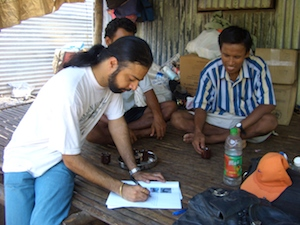

- Title Page
- Introduction
- The Islands and the Anthropologist
- Tsunami and First Response
- Wading In
- Second Tsunami
- In Search of Axes
- Steering a Sustainable Course
- Steering Committee
- Exchange Visit
- Nirnay Means Decision
- Up and Running
- Caritas Leans In
- Singh Sounds a Warning
- Midcourse Correction
- The SOPHIA Experiment
- Taking Stock
- SOPHIA Reports
Introduction
In the early morning hours of December 26, 2004, a magnitude 9.1 earthquake unleashed a tsunami of unprecedented force in the Indian Ocean, sending it on a collision course with the Nicobar Islands, home to a tribe that had little contact with the outside world. The devastation was immediate and far-reaching: thousands dead, habitats destroyed, ancient artifacts swept away.
Two days later, Simron Singh, an Indian anthropologist who was the world’s expert on the Nicobarese, received an urgent message from the islands: “Central Nicobars entirely wiped out. Do something as soon as possible.” Singh wanted to help, but what could he do? He had no experience in disaster recovery or rehabilitation work, no funds, and no project management skills.

© Simron Singh
Simron Singh in the Nicobars
Singh turned for advice to colleagues at the Institute of Social Ecology in Vienna. As they debated whether it was proper for research scientists to engage in humanitarian relief efforts, offers of aid for the Nicobarese started rolling in. The institute took a waitLandLsee approach, but on his first postLtsunami visit to the islands in early 2005, Singh reported that the recovery was starting to create problems of its own: a "second tsunami" of overabundant supplies, cultural misunderstanding, competition among nongovernmental organizations (NGOs), and misguided rehabilitation programs. Singh pleaded for the institute to intervene with a culturally appropriate plan.
In April, Institute Director Marina Fischer-Kowalski made the decision: the institute would partner with Caritas Austria, a Catholic relief organization, to create a new, academic-based, special-purpose NGO—the Sustainable Indigenous Futures fund (SIF)—to support sustainable development in the Nicobars. Drawing on approximately €400,000 (about $500,000) in pledged funds, SIF would help the Nicobarese determine their own future, building on their unique history and culture. SIF formally launched in May 2005.
In September 2005, SIF invited a delegation of Nicobarese leaders to Vienna to develop concrete plans. By the end of the year, two projects were up and running in the Nicobars: a student hostel and a network of fishing and horticulture cooperatives. But the Nicobarese struggled with paperwork and bookkeeping. Legal and accounting difficulties arose and, by March 2006, Caritas came under pressure from donors for slow results. More seriously, the native culture seemed to be fast disappearing, a victim of the sudden introduction of a cash economy, a glut of Western consumer goods, and the sharp dealings of native "tsunami captains." In June 2006, Singh warned that the islanders were becoming lazy and aidLdependent.
Sustainable development was proving more difficult than expected. Over the next year, SIF tried in several ways to reengage the Nicobarese in designing their own recovery, including a cross-cultural retreat in the Himalayas where a new team of Nicobarese worked with SIF, a band of forest nomads, and SOPHIA, an Indian NGO that specialized in capacity building among indigenous peoples. But six months later, SOPHIA reported that communication with the Nicobarese had broken down completely, and that they had made little progress on any of their stated objectives.
As the SIF Steering Committee gathered in Vienna in November 2007, it faced some difficult facts. Nearly three years had passed since the tsunami, and SIF’s work was at an impasse. Donors were clamoring for results, and Caritas was threatening to pull out. Nearly €300,000 remained in the SIF fund, but what should SIF spend it on? In the face of cultural collapse, what did sustainable development mean? Could the scientists and the humanitarians broker a workable solution?